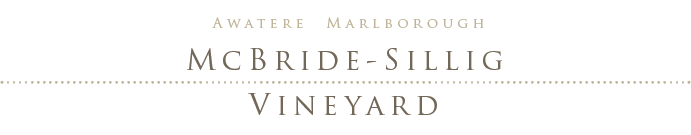

Our 17 hectares family vineyard is one of the first developed in Marlborough’s Awatere valley.
When we bought our land in 1985, there were no vineyards in the Awatere valley. By the time we planted in 1993, there were only 40 hectares of vines in the ground, compared with approx. 7000 hectares in 2014.
Set in a prime position, our vineyard includes Cabernet Franc grown for our distinctive Franc Rosé, as well as Sauvignon Blanc and Pinot Noir.
Our vineyard was planted at a density of 3800 vines per hectare in 2.2 metre rows, with 1.2 metres between vines, the first to use grafted plants in the Awatere.
A mixture of clones has been grafted onto 101-14 rootstock, double guyot pruned to the appropriate bud number, to keep a balanced vine.
Our vineyard is on a low vigour site, on the north bank of Marlborough’s lower Awatere River, facing the sun and five kilometres from the sea. Silty loess soils cover glacial river gravels, encouraging the vines to develop a large, deep root system, without becoming over-vigorous. This results in balanced vines, producing low yields of highly flavoured, fully ripe fruit. The proximity of the river provides air movement during cold periods in spring and autumn, ensuring a frost-free environment. The prevailing summer wind is the warm Nor'West, keeping both fruit and vine dry and healthy.
The northern aspect, river terrace environment and climate, provide a truly special “terroir”, expressed in the McBride-Sillig family’s wine.

New Zealander Donald McBride and Corinne Sillig-McBride a Swiss/French national, met in Tahiti in 1984, when both were sailing around the Pacific.
We planted our vineyard in 1993 in the Awatere Valley, having settled in Marlborough after eight years working in France. With us were our four children then aged from two to five.

Imagine yourself drinking our Franc Rosé, refreshing yet fruity, well balanced, crisp and light. Admire its delicate colour in the glass, adding often neglected aesthetic enjoyment to your dining experience.
Served between 8-10 °C Franc Rosé is a wine for all seasons. Open a bottle not only in summer, but at any time of the year, if only to recall past holidays or dream of a day when you will relax on a hot sunny beach.
Our Rosé is an ideal accompaniment to weekend brunch, hors d’oeuvre, “charcuterie” or aperitif. It complements lunch or dinner, whether meat, grilled fish, shellfish or spicy exotic dishes are being served, and also most desserts.
Taste and you will agree that our Rosé knows how to seduce. Close your eyes and discover that Franc Rosé is dry like the valley of its origin and expressive like those who grew the grapes and vinted this wine.
I suggest that you click the order button now to ensure that you have some of our limited Franc Rosé on hand, to savour with friends and family for the Christmas period and through the year to come.
Harvested on April 21st 2016 at 24 brix, the fruit was crushed, de-stemmed and cold-soaked for colour and flavour extraction. It was then pressed to tank for a long, cool ferment before being rested on lees until bottling.
Lovely pale colour, off dry rose with crushed red berries, black currant, rhubarb and biscotti notes.
It has a juicy acidity that carries the flavours and a rich balanced palate with a refreshing mineral undertone on the finish.
Another excellent FRANC ROSE.
FRANC ROSE is easy to drink and goes with just about any food. For those who have not got the time, no need to worry with wine matching, pairing white with the starter, red with the main.
FRANC ROSE is light and easy with enough heft to hold up to most summertime food. I mean, who does not smile at the thought of a pink wine?
It takes as much talent to make a good Rosé as a good red or white wine. Mcbride Sillig presses solely their Cabernet Franc grown in Marlborough, to produce a full bodied wine with captured tannin and exceptional aroma. Their Franc Rosé is made with the ENTIRE de-stemmed crushed grapes, that are left to macerate for a few hours to pick up a blush of skin colour, THEN PRESSED. It is the degree of contact between the red skin and clear juice from the white flesh that determines the wine’s final colour.
Some very affordable Rosés are a mixture of white and red wines and others are made by crushing red grapes and using just the run-off juice to make a Rosé, increasing the concentration of RED wine made from the remaining grapes.
The juice or “moût” is left to ferment, then is clarified and bottled to retain its fruit, flavour and freshness.
The McBride family’s skills are dedicated, to growing and making its distinctive rose and red in Marlborough, for a connoisseur market.
More than one million years ago, grapes grew around the Mediterranean, on vines that barely resembled the modern style of today. It was in around 3000 BC that the first vinification techniques were developed and the wine culture was born.
In the early days of winemaking, vinification was based essentially on red grapes, which, after a quick “foulage” (crush) and no maceration produced a pink wine called “clairet” (claret).
In the thirteenth century France produced 87% of clairet -appreciated for their vivacity and freshness- to 13% red. The clairets were considered healthy, nourishing wines by their mostly urban, often aristocratic consumers. By the 1300’s, clairets had vanished in favour of reds. Occasionally clairets were a mixture of white and red grapes, first called Rosé in 1682.
Paid holidays were introduced in France in the 1920’s and the annual migration of holidaymakers to the South, brought some colour to the Rosé market. However, it wasn’t until the beginning of the 21st century that the style returned to favour. Quality was not always good, but this has now changed radically, as Rosé is enjoyed internationally, for its delicate colour and fruity flavours.
To mark the 20 year anniversary of our vineyard establishment, we have produced a RED 100% Cabernet Franc, from a few select rows in 2012. To meet with its success, we are now releasing our 2014.
Our 100% Cabernet Franc red wine will satisfy the demand of our actual and future customers, who want something different. We are sure it will develop a loyal following.
As for the name, a Devil’s Advocate is one who argues against a cause or position to determine the validity of said argument. Originally used by the Catholic Church when beatification was proposed.
As you can see on the label, we are examining life over a glass of our Devil’s advocate, as Plato famously said: "An unexamined life is not worth living".
We harvested the fruit on April 12th 2014 at 23 brix.
The fruit was soaked, then fermented in stainless fermenters and then raised in barrels for 12 months. We used old barrels because we wanted the benefits of barrel aging without the masking influence of oak.
The result is a complex single vineyard wine, born from mature 20 year old vines.
Classic, light La Loire style Cabernet FRANC and character, aroma of red fruits bouquet: plum, sour cherry and blackberry, dried herbs and violets. Nice ripe tannins with a velvet smooth finish.
You probably know that "to be someone's Devil's Advocate" means to take the opposite position in a discussion to prove a point. So the story behind the label is: Donald and I (you might have or have not recognised that the 2 people are Donald and me) have both been brought up to not just accept blindly what we read, hear or are told, so we discuss everything and on the label, we are being the Devil's Advocate over our wine and, for once we both agree?..that it is a great wine!
Ideal with meats (grilled and in a sauce), pasta, lasagne, tomatoes, salads and cheese and desserts (chocolate, fruit cakes, sorbets...).


phone +64 (0)27 324 5757